单Boss/入口64条六章实际阵容
规则与序列159条结算、互斥、取消
真实AB/GPU306条显现、消散、回池、UI
完整Play59条新增Unity错误 0
已交付行为
第一至四章唯一Boss占2×2，第五六章占3×3；身体美术缩放从1增至1.38（可见宽约占格的95%）。Excel和导出表同步；加载及生成双重拒绝多Boss配置，重复进章仍只有一个Boss。
取消通用底座圆环与登退场Shader的圆环绘制。第一、三章移除独立旋涡覆盖层，以噪声域扭曲推动身体内采样、云带/湖水细波；保留原Alpha轮廓。第五章以冷蓝冰壳、晶面裂纹和融化前沿显现，第六章加强十字光柱及消散边缘；第二章加强放射阳光束、金色扫光与显现前沿爆发，第四章使用毒液。雪花只绘制一次，宽度约身体80%，Alpha最高22%，外层不再放大1.9倍。
两种提示均用72%不透明黑底、白字。登场新增独立镜头拉回阶段，完全归位后才加载弹幕；退场波浪完成并清镜头特写后显示积分。
登场与退场分别使用Kenney CC0的两段钟鸣，演出持有独立句柄，取消时停止并释放。实测AudioSource曾播放，而非只看Play调用成功。
验证与修复记录
首次退场样本仅0.24秒，第二章Play未捕获播放，已换成另一段更长钟鸣；首次前景旋涡与实心雪花已按用户反馈弃用。Shader保留字编译问题已修正。最终以本页最终断言为准，未降低声音、唯一Boss或镜头断言。
覆盖六章实际入场、GM重复请求拒绝、GM退场还原生命/占格/积分、真实击杀、剧情、结算、回大厅及入场取消。隔离剧情进度，不修改生产存档。测试启动的Play已停止，恢复StartScene并撤销测试标志。
此报告验证登退场效果。完整Play59条来自第二、五、六章最终强度微调之前；微调后再次通过真实AB/GPU306条；手机GPU耗时、帧率及Android真机未测，不据此承诺低端机性能。
第1章 · 星尘全身流动
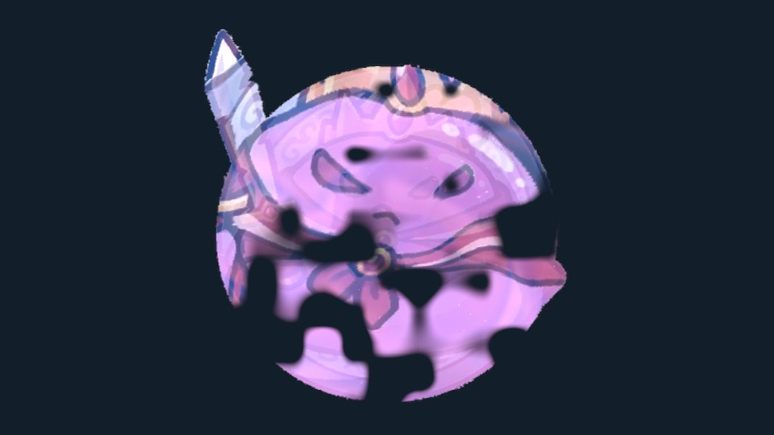
实际PC AB渲染：身体内部效果，原序列帧保留。
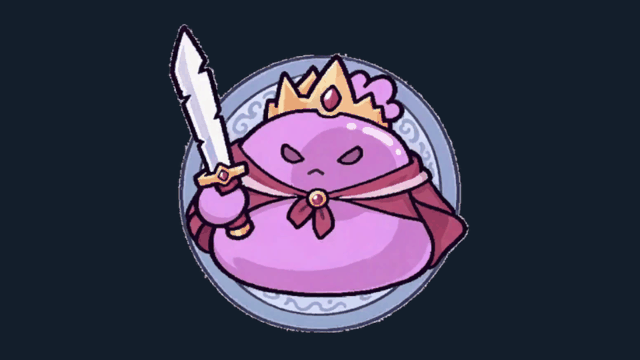
完整Play入场与黑底提示
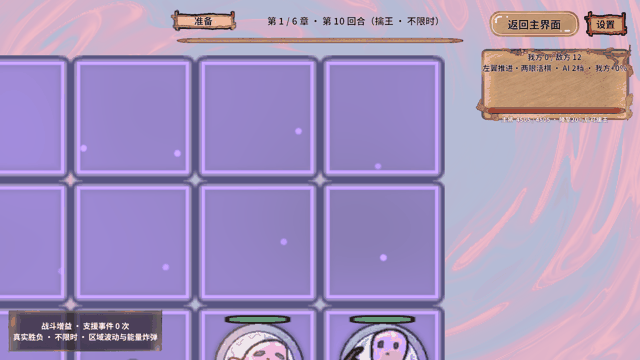
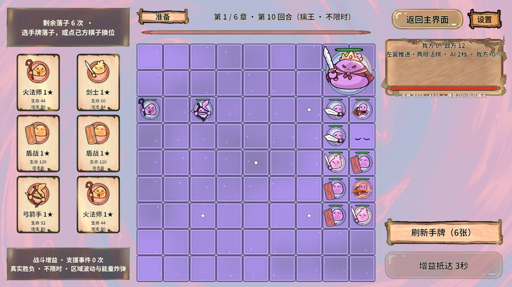
第2章 · 强化阳光普照
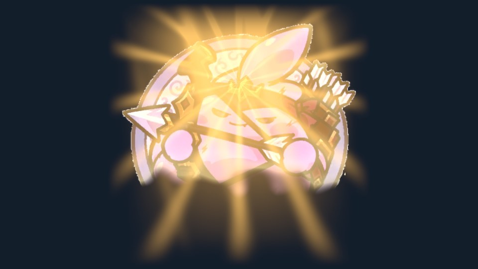
实际PC AB渲染：身体内部效果，原序列帧保留。
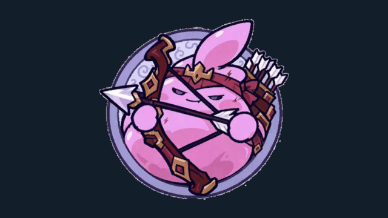
完整Play入场与黑底提示
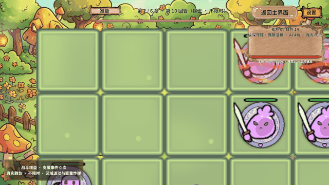
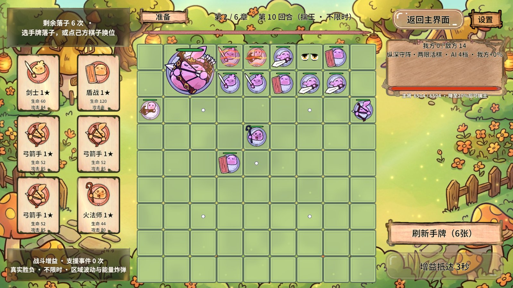
第3章 · 镜湖水流与龙卷
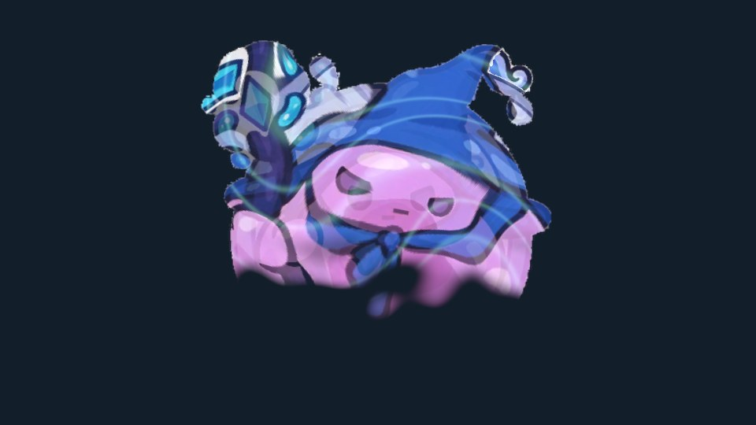
实际PC AB渲染：身体内部效果，原序列帧保留。
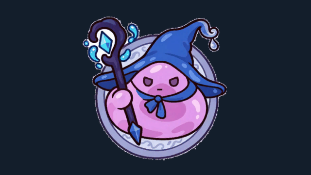
完整Play入场与黑底提示
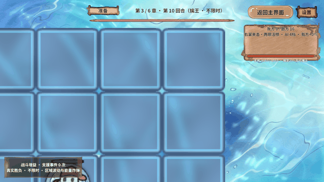
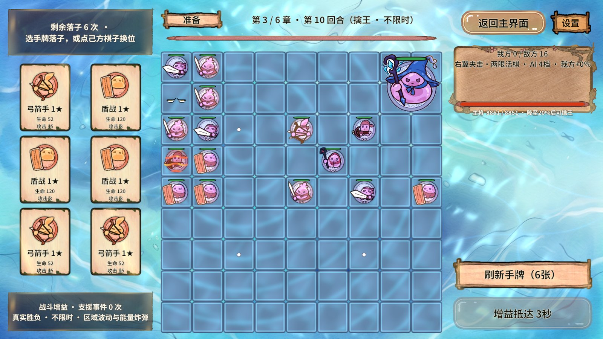
第4章 · 毒液沼泽
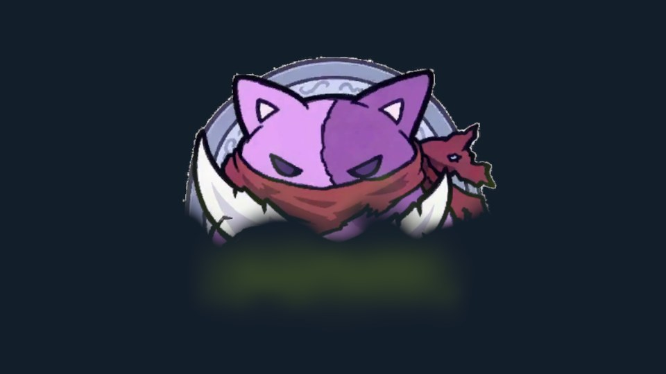
实际PC AB渲染：身体内部效果，原序列帧保留。
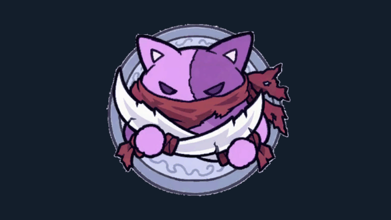
完整Play入场与黑底提示
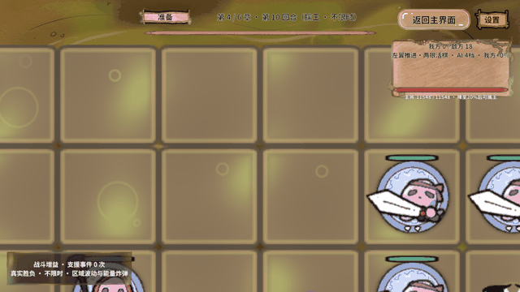
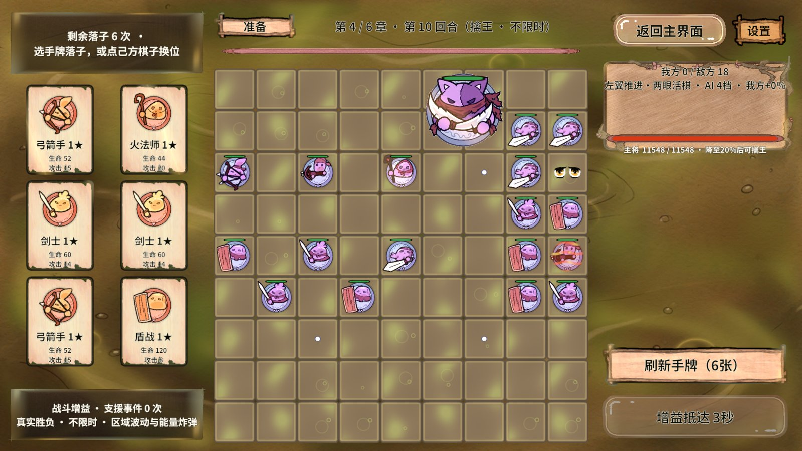
第5章 · 冰壳融化显现
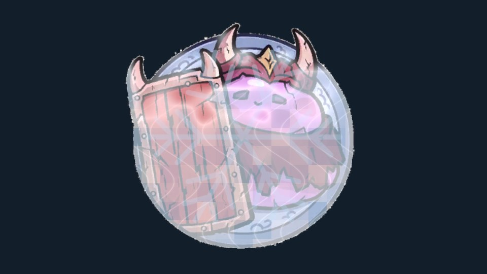
实际PC AB渲染：身体内部效果，原序列帧保留。
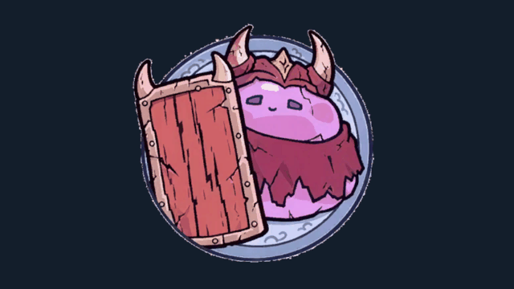
完整Play入场与黑底提示
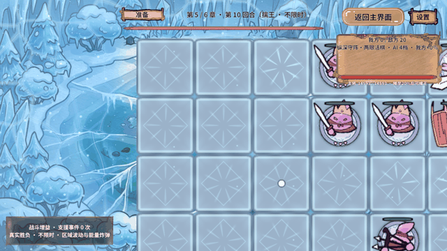
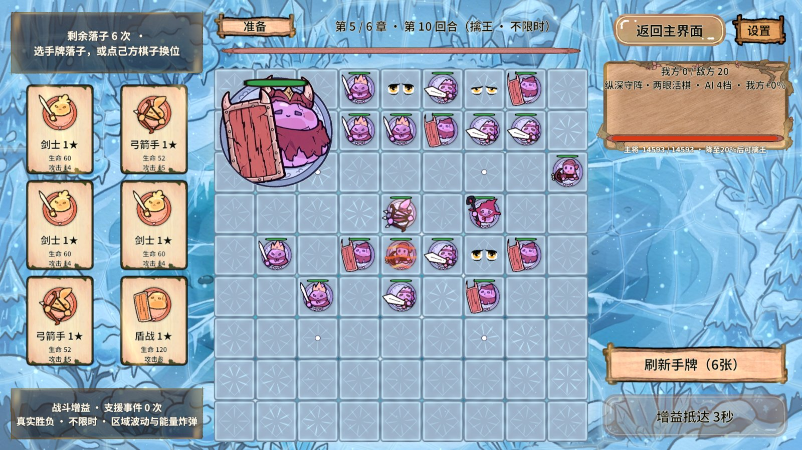
第6章 · 强化十字圣光
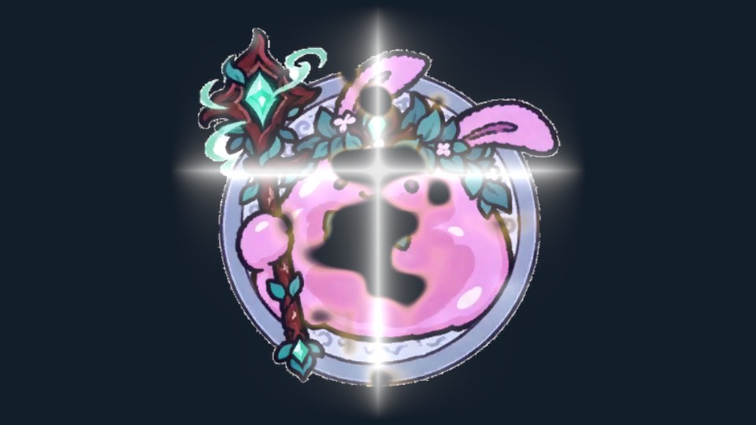
实际PC AB渲染：身体内部效果，原序列帧保留。
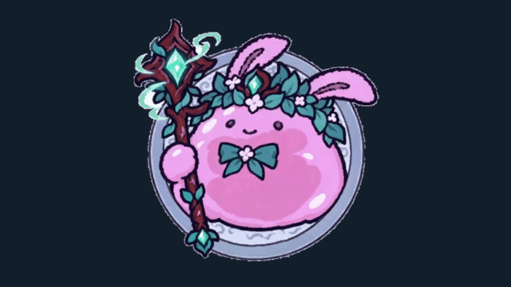
完整Play入场与黑底提示
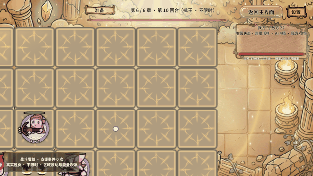
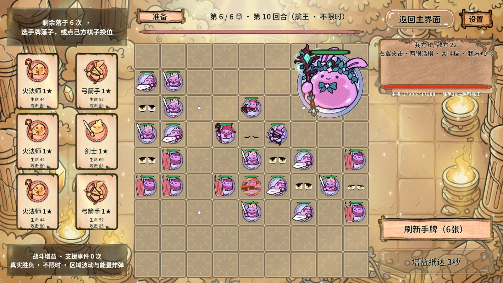